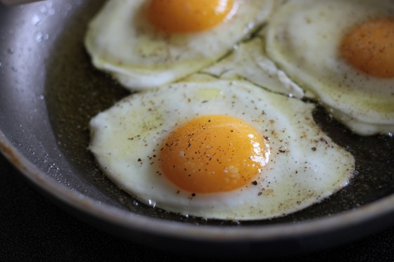

The Tristan Breakfast

Description
The classic Tristan Breakfast that delivers three
sunny side up eggs along with a bagel with cream
cheese and a coffee.
This breakfast can easily be made in under 15 minutes.
Ingredients
- 3 eggs
- seasoning
- bagel
- cream cheese
- coffee
Steps
- Add 3 eggs into pan to cook
- Prepare bagel in toaster and brew coffee
- When eggs begin to sizzle, lower temperature
- When the top is no longer runny, serve eggs with
remaining items